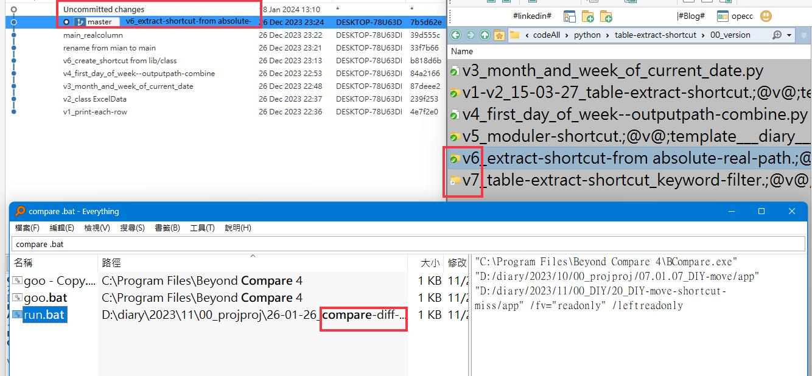

02-01-18_getLinkPath-for-version-diff
那我真的要認真做題目了然後。發現到說你每次這樣子進行版本的比較太累了，所以理想中的情況的是呢，你就直接透過命令列把2個捷徑傳過去來比對這2個路徑，它的內容有什麼不一樣就可以了。
那問題來了，要怎麼樣直接取得2個捷徑中的路徑呢？有沒有辦法做到呢？結果在詢問過後發現到說透過powershell是可以的，那既然這樣就好辦了，就會跟之前的做法一樣，直接透過bat，然後傳送2個。接近的參數。 2個bat傳送2個捷徑的參數。
然後將這2個參數呢送到比對軟體之後，就可以直接得到你要的效果，那這樣的流程應該是很流暢的，畢竟在之前呢，我們就已經做過大量的傳送參數的一些類似應用了。只是要直接做，有點比較麻煩，因為PowerShell debug我還不是很熟悉，不過以前都做過類似的啦，所以應該要做到更難才對。只是傳送2個參數而已。只要確定說bat的地方是有接收到的，那再來就是要看powershell要如何接收這2個不一樣了的參數。
different-lnk-version
